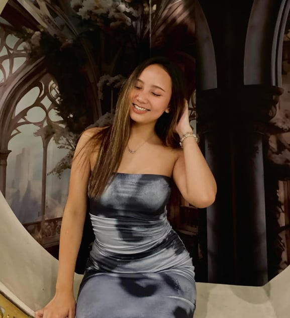

Happy Birthday Abi 💖

Happy Birthday! Click this My Habibi!<3
i haven’t moved on yet my abi, i miss the times we used to video call late nights, ur mga biro, pangangasar, tampo, jokes, vibes, i found my happiness sayo my abi, even the times u call me ur habibi, i don’t know what went wrong my sweet baby, I’m not mad i just can’t believe that you gave up on me that easily, I’d wait and i will keep all my promises, happy birthday my baby abi, i hope you are happy and always healthy i still include you to my prayers, and u are my motivation to keep striving everyday:)) i truly miss you, ur updates, ur vids, ur comforting messages, ur reminder to eat in time and to always take meds, the way u care for me, i miss u my kakampi, it’s just unfair na you did give up on me in a most difficult position, those days na u don’t have gana, you don’t read my paragraphs, ur mood changes, pinilit ko lang i keep sa sarili ko na i don’t need to show u my pinagdadaanan and i want to keep it for me kasi i really wanted this to workout, di ako nag sabi ng problems ko, kahit kunti lang messages mo inintindi ko, kasi alam ko naman na may days na so drained, and mahirap, kaya i did understand ur situation pero u did give up agad ng ganon, I’ve also been going through a lot mentally and emotionally, trying my best to stay strong even when everything feels heavy, but I still held on for us and for what I believed in.
i really wanted to end it all just so everything would stop hurting, but a part of me still chooses to stay and wait. u made ur promise, but i don’t really care if you will fulfill it, as long as my habibi is happy diba? 🙂 I’m always gonna support you, in ur game, jogging, u are so brave and strong abi, I’m really proud of you and ur disiplina, i really don’t know where to run to eh hehe, wala kana and u don’t reply to my messages, a part of me died when u left me, maybe u will find somebody more pogi and all, I just hope you are happy, I really wanted it to be you, i wanna be rich for u, I’m doing all this for you abi, all of my plans para satin, endless nights i couldn’t sleep, stop thinking, asking God why? you were the commence of all my prayers abi, everyday i just go back to our old conversations, and photos and also our tiktok and i realize i was really happy that time, and it always made me smile, i miss you so so much, I’m going to keep all my promises like i said I’m the man of my words and i take full responsibility of my words and i will do my best to fulfill them, I hope you realize that I was just a man trying to heal your past, show you what true love is, adore you, take care of you, giving you the treatment you deserve. I wrote you 36 songs all for you bebe, imma carry this no. 20 at my back, I’m sorry if i keep annoying you i know you’re annoyed seeing my name on your phone, therefore I’m sorry. baby if ur hurt tell me ha? i made a promise I’m ur kakampi sa lahat, i would never judge my baby, you know naman po na i love you super duper much diba baby?:) you can use me i don’t care anymore i just wanna be by ur side again, I’d risk everything just to be with you even for a short moment, i always wonder where it went wrong:( but i just wanna say happiest birthday my habibi, i wish the best for you.
words like pretty, beautiful, gorgeous, aren’t enough to compliment you, you’re so beyond that, your beauty is just unexplainable—my beautiful, glorious, elegant, intelligent, charming, kind, thoughtful, strong, courageous, creative, brilliant, gentle, humble, generous, passionate, wise, funny, loyal, dependable, graceful, radiant, calm, confident, warm, compassionate, witty, adventurous, respectful, sincere, magnetic, bold, articulate, empathetic, inspiring, honest, patient, powerful, attentive, uplifting, classy, friendly, reliable, ambitious, intuitive, talented, supportive, grounded, determined, charismatic, extraordinary, trustworthy, noble, dignified, perceptive, innovative, refined, considerate, balanced, open-minded, composed, imaginative, mindful, optimistic, virtuous, loving, serene, and absolutely unforgettable.
happy birthday and i love you so much. i’ll always wish you peace, happiness, and a life that treats you kindly, even if we’re no longer the same.
i saw you in my dreams again, i held you a little tighter because i knew when i wake.. up, you'd be gone.
Take your time, my love, and have your space if that's what you need right now. Even though it hurts me and I'm going to miss you so much, I'll still respect it because I care about you deeply. Please don't worry about me finding someone else, because I don't want anybody else but you.
I'm not going anywhere, and I'll never give up on you no matter what. Il still be here, patiently waiting and caring for you the same way I always do. So take all the time you need, my love. I'll still be here when you're ready.
i made a promise to you that i would fight for us for as long as it takes and i won't ever give up on you because i was serious about us being together, and i just can't accept a reality where you're not here with me. i will always love you
i never regretted loving you. not even for a second. even if we didn't end the way i hoped we would, i'm still grateful our paths crossed. i loved you in moments that looked simple to everyone else, but meant everything to me. i got to see the sides of you not everyone gets to see your smile, your dreams, your fears, the way you opened up when you felt safe with me. those moments felt real. they felt like home. and yes, it hurts. it hurts in ways i didn't know love could hurt. maybe because i still love you. maybe because a part of me is stilli holding on, even if i know i shouldn't. but even in this pain, I'm thanktul. you taught me things i wouldn t have learned on my own about patience, love, vulnerability, and how deeply i can feel for someone. it wasn't bitterness that stayed with me... it was growth. slow, quiet, painful, but real. im not over you. not yet. i still love you, and maybe a part of me always will. but i'm learning to live with that love in silence, gently, without forcing anything. thank you for being someone i will always remember.
I'm going to love you in your weakest moments to your strongest ones. i'm going to love you when you're happy and im going to still love you the most when you re sad. don't you understand?
Im here and im not going anywhere. I want to love you, every piece of you l want you with your imperfections as much as I want you for you. and im always going to want you, i'm always going to be here loving you with everything
I hope my prayers reach you, even if my presence no longer does.
Because even from a distance, l still wish for you to smile, feel loved, and find peace within your neart. I hope life is kind to you anc that the days ahead bring you the happiness yo struly deserve.
And if you even feel alone someday, l hope you remember that somewhere in this world, there is someone who quietly prays for your happiness, even if they are no longer part of it.
Loving you without seeing you everyday is proof that it comes from the heart, and not from my eyes
we were so similar I will never forget that.
pls comeback and reach out if you want to I’ll reply soon as possible my love I’d wait for you.
- Ur Beloved Habibi 💗